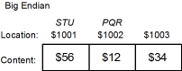
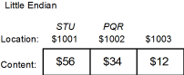

| Previous Section | Next Section | Index | Questions | Search the Text |
It always seems to be the case that data is never where one wants it to be. The instructions described in this section perform the basic operation of 8 and 16 bit data movement. Instructions exist for the A, B, D, X, Y, SP, and CCR (condition code) registers. When the A or B accumulators or the CCR are specified, the operation involves 8 bit data. The other registers are always 16 bit data.
With the exception of the exchange instructions, the source locations of all of these instructions are not altered by the instruction execution. Although the instruction names imply the data is moved from one location to another, what really happens is that data is copied from one location to another. This means that if, for instance, one stores the contents of an accumulator into memory, the data is still in the accumulator and can be used in later instructions.
It is important to remember that the 16 bit accumulator D is actually the two 8 bit accumulators A and B concatenated so that A is the most significant byte of D and B is the least significant byte. If accumulator D is being used, loading accumulator A has the effect of altering the most significant byte of D, which is probably not intended.
When 16 bit data is stored in memory, the most significant byte of the data is stored at the memory location specified by the effective address, and the least significant byte is stored at the effective address plus one. This is referred to as "big endian" byte order. Intel microcontrollers use "little endian" byte order where the least significant byte is stored at the lower address. This bit of confusion has been with us for over two hundred and fifty years (see Gulliver's Travels), although only in the computer world since the 1950's.
In any case, 16 bit data in memory is always stored in two consecutive bytes. These two consecutive bytes are called a word, and are referenced by the lower of the two memory locations it includes.
Some examples will help explain these points. The byte location STU at $1001 contains the value $56, while the word location PQR (two bytes) starting at $1002 contains the value $1234. In a big endian microcontroller, such as the 68HCS12, the data would appear like this:

While in a little endian microcontroller, the data would appear like this:

It is important to note that when using the assembler, the programmer is responsible for knowing the size of data and which instructions can be used. For instance, if an 8 bit value in memory is loaded into a register with a 16 bit load instruction, no error will be given, however the result probably won't be what is intended. This is an extremely common mistake. For instance, in the preceding example, if we were to load PQR into a byte register, we would only get the first byte, that at location $1002. This would be the value $12 (big endian) or $34 (little endian) and not $1234! If we were to load STU into a 16 bit register, we would be loading the word starting at location $1001, which would be $5612 (big endian) or $5634 (little endian). Again not what we want.
For best performance when external memory is used, the word data should be stored at an even address. This is called aligned data. The assembler can force the location counter to an even address with this directive:
org (*+1)&$fffe
The 8 bit accumulator load instructions are:
These instructions have a single operand to specify the memory location. The addressing mode may be immediate, direct, extended, or any of the index modes. The instructions have a side effect in that they alter the condition code register so that they can be followed by a conditional branch instruction based on the value loaded being negative, zero, or positive.
The immediate addressing mode is used to load a constant value into the accumulator. The immediate mode operand is 8 bits, corresponding to the size of the accumulator. To load a value of 0, it is slightly more efficient to use the clra or clrb instruction, described below.
Examples:
ldaa #'A ; load accumulator A with the character A (value 65)
ldab $810 ; load accumulator B with value in memory location
; $810 (leading $ means number is hexadecimal)
ldaa #-4 ; load accumulator A with -4
ldab 2,X ; load accumulator B with contents of memory location
; at address (X)+2, where (X) is contents of
; index register X.
ldaa PZ1A ; load accumulator A with value in memory location
; PZ1A. PZ1A is the label of a DB, DS, or EQU
; directive defining data storage.
The 8 bit accumulator store instructions are:
These instructions have a single operand to specify the memory location. The addressing mode may be direct, extended, or any of the index modes. The instructions have a side effect in that they alter the condition code register so that they can be followed by a conditional branch instruction based on the value stored being negative, zero, or positive.
Note that the move instruction is used to store a constant value into a memory location.
Examples:
staa $810 ; Store value in accumulator A at memory location $810
stab VALX ; Store value in accumulator B at memory location VALX
; VALX is the label of a DB, DS, or EQU
; directive defining data storage.
stab 31,Y ; Store value in accumulator B at memory location whose
; address is (Y)+31 where (Y) is the contents of
; index register Y.
The 16 bit register load and store instructions are:
The instructions are analogous to their 8 bit accumulator counterparts. The differences are that the effective address is of a word (two bytes), and that immediate mode for the load instructions is a 16 bit constant.
Examples:
ldx #981 ; Load index register X with constant 981
ldd #-20000 ; load accumulator D with constant -20000
ldx $800 ; load index register X with the data at word location
; $800 (byte addresses $800 and $801)
ldy 0,Y ; Load index register Y with the contents of the word
; at the address (Y), where (Y) is the contents of
; register Y. Example: if Y initially contains $820,
; and if the word at memory location $820 contains
; $1224, then after executing this instruction, Y will
; contain $1224.
ldx #ABC10 ; Load index register X with the address of memory
; location ABC10, where ABC10 is the label of a DB,
; DW, DS, or EQU directive defining data storage.
std ABC10 ; Store the contents of accumulator D at word memory
; address ABC10.
std 0,X ; Does the same thing above std instruction when index
; register X has been loaded with the address of memory
; location ABC10 (the instruction two above).
The load effective address instructions are:
These instructions, which are only available with the index addressing modes, do not do the final memory read, but instead load the effective address into the register. Condition codes are not affected by these instructions. There are two instructions which are synonyms for leax B,X and leay B,Y, namely abx and aby. These will be covered in the next section on arithmetic instructions.
Direct and Extended addressing modes are not available; however an equivalent instruction is the corresponding load instruction with an immediate mode operand.
These instructions are useful for performing arithmetic, usually arithmetic on addresses, using the index registers instead of having to use accumulator D. Examples:
leax 100,X ; Add 100 to index register X.
leay B,Y ; Add (unsigned) value in accumulator B to index
; register Y
leax 0,PC ; Load index register X with the address of the
; next instruction
The instructions that copy data from one register to another are:
The only one of these that is truly important is the first, tfr. It allows transferring data from one register to another where the source and destination are each one of registers A, B, D, X, Y, SP, or CCR. This instruction does not effect the condition code register, unless the destination register is the CCR. When a transfer is made from a 16 bit register to an 8 bit register, only the least significant byte is transferred. When a transfer is made from an 8 bit register (which includes the CCR) to a 16 bit register, a sign extension occurs. Basically this means the 8 bit value is treated as though it were an 8 bit signed number. If the sign bit is 0, the upper byte of the destination is all 0's, and if the sign bit is a 1, the upper byte of the destination is all 1's.
The tab and tba instructions differ from tfr A B and tfr B A in that the former set the condition code register. These instructions exist primarily to allow upward compatibility from Freescale's predecessor product, the 68HC11. The sex instruction is identical to the tfr instruction where the source register is 8 bits and the destination is 16 bits. This is just a mnemonic synonym for convenience. The tpa and tap instructions are likewise identical to tfr CCR A and tfr A CCR. These mnemonics exist for compatibility with the 68HC11. tsx, txs, tsy, and tys are also mnemonic synonyms for 68HC11 compatibility. It is probably better to always use tfr.
Examples:
tfr A B ; transfer contents of register A to register B
tab ; transfer contents of A to B and set condition codes
tfr X Y ; transfer contents of register X to Y
tfr X B ; transfer the least significant byte of X to B
tfr A D ; transfer the contents of A to D, extending the sign.
; Accumulator B ends up with the original contents of A,
; and accumulator A ends up with either 255 or 0
; depending on the sign of the original value in A.
sex A D ; Same as tfr A D above
How does one transfer from an 8 bit register to a 16 bit register without sign extension, treating the 8 bit value as unsigned? Use some ingenuity!
; Transfer from B to D without sign extension.
clra ; just clear accumulator A
; Transfer from A to D without sign extension
tfr A B ; B gets value in A
clra ; then A is cleared
; Transfer from A to X without sign extension
ldx #0 ; clear X
leax A,X ; X gets sum (A)+(X), where (A) is unsigned contents of
; accumulator A and (X) is contents of X, which is 0
When instructions don't exist, there is usually a work-around.
The exchange instructions are:
In an exchange instruction, the two registers specified as operands exchange their contents. As in the tfr instruction, the registers can be any of A, B, D, X, Y, SP, or CCR. Condition codes are not altered unless the CCR is one of the register operands. The xgdx and xgdy instructions are mnemonic synonyms for exg D X and exg D Y provided for 68HC11 compatibility.
Exchanges between two 8 bit registers or two 16 bit registers work as expected, however exchanges between an 8 bit and a 16 bit register take some care. The data from the least significant byte of the 16 bit register is always transferred to the 8 bit register. If the first register is one of X, Y, or SP and the second is accumulator B or the CCR, then the 8 bit value is sign extended during the transfer, otherwise it is zero extended. The CPU12 Reference Manual advises against exchanges between D and A or B. Examples:
exg X Y ; exchange the contents of registers X and Y
; If X initially contained 32 and Y contained 10321
; then after execution X will contain 10321 and Y 32
exg Y X ; performs same as exg X Y
exg A B ; exchange the contents of registers A and B
exg B A ; performs same as exg A B
exg X B ; copies the sign extended contents of B to X while
; it copies the least significant byte of X to B
; Examples B X | B X
; Initial $32 $4567 | $85 $7123
; Result $67 $0032 | $23 $FF85
exg B X ; copies the zero extended contents of B to X while
; it copies the least significant byte of X to B
; Examples B X | B X
; Initial $32 $4567 | $85 $7123
; Result $67 $0032 | $23 $0085
exg X A ; copies the zero extended contents of A to X while
; it copies the least significant byte of X to A
; Examples A X | A X
; Initial $32 $4567 | $85 $7123
; Result $67 $0032 | $23 $0085
exg A X ; performs same as exg X A
There are two move instructions:
The move instructions have two memory operands, one for the source location and one for the destination location. The allowed addressing modes for the source operand are immediate, extended, and any indexing mode that fits in a single byte and is not an indirect mode (allowed: 5 bit constant, accumulator offsets, auto increment/decrement). The destination operand may be extended or any of the indexing modes allowed for the source operand.
Examples:
movb #32 $811 ; set location $811 to the value 32.
movw ABC DEF ; move the word at ABC to DEF, where ABC and DEF
; are both labels of dw, ds, or equ directives
; defining word length data location.
movb 1,X+ 1,Y+ ; Moves the byte at the location specified by the
; contents of register X to the location specified
; by the contents of Y, and then increments both
; X and Y by 1
The following clear instructions exist:
Clearing a location sets its contents to zero. Condition codes are altered to indicate "equal to zero" to a following conditional branch instruction. The memory address operand of the clr instruction can be one of extended or any indexed addressing modes. Memory words can be cleared using the movw instruction, and the index registers can be cleared with a load instruction. The best way to clear register D is with the two instruction sequence clra, clrb. Examples:
clra ; Accumulator A is set to the value 0
clr $880 ; Memory byte at location $880 is set to 0
movw #0,$810 ; Memory word at location $810 is set to 0
ldx #0 ; Index register X is set to the value 0
Continue with Arithmetic Instructions.
Return to the Index.